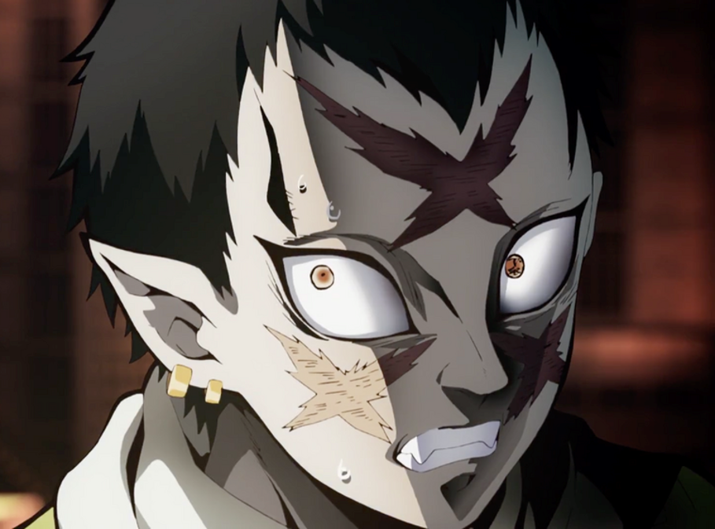

-
Wakuraba was a man of average stature who had pale, greyish-white skin, with what appeared to be three large, cross-shaped scars cut into his cheeks and the canter of his forehead and noticeably elf-like, pointed ears. His eyes were wide and sharp with orange irises, with the kanjis for "Lower Three" etched into his left eye, as well as short, black hair and a widow's peak.
-
Wakuraba wore a dotted, bamboo-coloured yukata with a pinstripe pattern, a piece of dark cloth around his waist, and a lighter one around his neck, as well as two golden hoop earrings on each ear and a pair of wooden sandals with black straps.
Wakuraba (病わくら葉ば Wakuraba?) was a member of the Twelve Kizuki, having held the position of Lower Rank Three (下か弦げんの参さん Kagen no San?).

Appearance
Personality
Like most of the Lower Ranks, Wakuraba was very loyal to Muzan Kibutsuji. When Muzan was brutally executing two of his fellow Lower Ranks, he was in doubt that this would be his end, as he had hoped to become stronger for him. However, Wakuraba appeared to believe in self-preservation above all else and was not just blindly obedient to Muzan. Upon realizing his master had no intentions of sparing a single soul, he resorting to fleeing away from Muzan in an ultimate attempt to survive.
Synopsis
Rehabilitation Training Arc
-
Wakuraba was summoned to the Infinity Castle by Nakime, in response to the death of Lower Rank Five, Rui. As the second last to appear, he became nervous at the immediate action taken upon him and grew wary of what was to come. Before long, he is transported by Nakime to a platform in front of her, present with him were the rest of the Lower Ranks; Enmu, Rokuro, Mukago, and Kamanue. In front of them stands an unfamiliar looking female demon, causing them to wonder about her identity.
-
Their wonder gave way to fear when the demon commanded them to bow and kneel, which made the Lowers Ranks realize the true identity of the female demon, Muzan Kibutsuji. Having disguised himself to catch them off-guard, Wakuraba quietly listened as Muzan informs them about the death of the only Lower Rank absent, Rui, before angrily asking why they Lower Rank Demons are so weak.
-
He lectured them about how being among the Twelve Kizuki is only the start to them being useful to him, stating that their sole purpose is to consume humans and gain power. Muzan angrily retorted that it has been a hundred years since the Upper Ranks were last replaced, yet the Lower Ranks are replaced continuously.
-
When Kamanue scoffed at his unrealistic expectations, Muzan shocks him by repeating the same phrase in his head.[3] Angered at the act of spite to him, he enlarged his arm and grabbed Lower Six. Despite his tearful pleas for forgiveness, Kamanue was gruesomely devoured by his master, spraying Wakuraba and the others in his blood as they stare in shocked silence.
-
Unable to believe he is being threatened with death by his master, Wakuraba wondered if all his efforts to attain his rank will be wasted, believing he was destined to do more for him. Muzan questioned whether they fear the Demon Slayers more than they fear him. Shocked at his bluntness, Wakuraba panicked and almost said a word but was interrupted by Mukago refuting his claim. He overheard as Muzan questioned her loyalty to him and brutally kills her for contradicting his statement.
-
Realizing that their minds can be read and their situation is hopeless with his lack of mercy, Wakuraba noticed that Muzan was busy absorbing the remains of Lower Four. Taking his chance, he leapt up and ran away to escape him. He sprinted throughout the Infinity Castle while being watched by Rokuro and Enmu, the latter calling him a fool for his decision. Though he gained a considerable distance away from him, Wakuraba suddenly found himself in Muzan's hand back to the platform as a severed head, his speed nothing compared to Muzan's beheading him instantly.
-
Wakuraba's head was thrown in front of Rokuro and Enmu to scare them with the severity of the consequences. He overheard as Rokuro attempted to save himself by claiming he can be useful to Muzan if he can receive a portion of his blood. Hearing his request, Muzan denounced him for attempting to "order him" to give blood, resulting in Lower Two's demise. With Enmu the last demon left, Wakuraba believed that he too will be killed due to Muzan's lack of mercy, as his own life finally ends.
Abilities
-
Overall Abilities: As Lower Three of the Twelve Kizuki, Wakuraba was undoubtedly a very powerful demon. He claimed that he was able to rise up in rank, indicating that he initially was Lower Six and was strong enough to move up. However, his true strength remains unknown due to the Demon King's act of killing him, and it was apparent that he paled in comparison to the likes of Rui and Enmu. He at least showed enough confidence in himself when he plotted to try and escape his master in an unfamiliar location.
-
Enhanced Regeneration: As one of the Lower Ranks, he received a larger quantity of Muzan's blood compared to an average demon, which then presumably gave him superior regenerative power in comparison to them. However, he did not possess the necessary power to regrow his body after being decapitated by Muzan due to the latter destroying the former's cells.
-
Enhanced Speed: Wakuraba was shown to be extremely fast, fast enough that he initially believed he had a chance of escaping Muzan's wrath by running from the Infinity Castle. He was able to cross a very great distance in only a few seconds and managed to traverse the Infinity Castle's unusual layout and gravity with success. However, he still paled in comparison to his master.